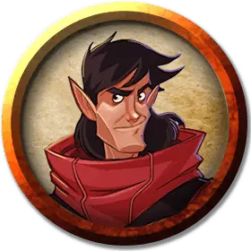

Дуб Меткобьющий
Oak Truestrike
Средний Гуманоид (Эльф), нейтрально-добрый, именной НИП

Класс Доспеха 15 (проклёпанный доспех)
Хиты 32 (5к8 + 10)
Скорость 30 футов
| мод | спас | ||
|---|---|---|---|
| СИЛ | 13 | +1 | +1 |
| ЛОВ | 16 | +3 | +3 |
| ТЕЛ | 14 | +2 | +2 |
| мод | спас | ||
|---|---|---|---|
| ИНТ | 10 | +0 | +0 |
| МДР | 13 | +1 | +1 |
| ХАР | 11 | +0 | +0 |
Навыки Восприятие +3, Выживание +3, Выступление +2, Природа +4, Скрытность +5
Чувства пассивное Восприятие 13
Языки Общий
Опасность 2 (450 опыта)
Бонус мастерства +2
Особенности
Наследие фей. Дуб совершает с преимуществом спасброски от очарования, и магия не может его усыпить.
Острый слух и тонкий нюх. Дуб совершает с преимуществом проверки Мудрости (Восприятие), полагающиеся на слух и обоняние.
Действия
Мультиатака. Дуб совершает три атаки Кинжалом с крюком или Ручным арбалетом.
Кинжал с крюком. Рукопашная атака оружием: +5 к попаданию, досягаемость 5 футов, одна цель. Попадание: 5 (1к4 + 3) колющего урона.
Ручной арбалет. Дальнобойная атака оружием: +5 к попаданию, дистанция 30/120 футов, одна цель. Попадание: 6 (1d6 + 3) колющего урона.
Реакции
Возврат долга (3/день). Когда Дуб получает урон от рукопашной атаки оружием, он может совершить атаку кинжалом с крюком.
Описание
Дуб Меткобьющий - специалист, принимающий решения в команде "Б", и, в зависимости от того, с кем вы разговариваете, реинкарнированный полубог. (Это долгая история.) Те, кто его знает, признают его уверенность, высокомерие и странную способность взаимодействовать с другими, каким-то образом говоря именно то, что каждый слушатель хочет услышать. Является ли это какой-то тонкой магической способностью или просто обаянием афериста, он хорошо использует это в любом случае.
Дуб становится радикально другим человеком с каждой своей реинкарнацией, переключаясь между нейтрально добрым и нейтрально злым. Его воспоминания о прошлых жизнях были разрушены его многочисленными смертями, но он проживает каждую новую жизнь, отчитываясь за предыдущую жизнь в своего рода кармической книге. Его нынешнее воплощение демонстрирует хорошую сторону. В основном. За исключением этой случайной ядовитой горечи. О, и мизантропия. На самом деле, если ты в конечном итоге возненавидишь этого парня, это, вероятно, не твоя вина.